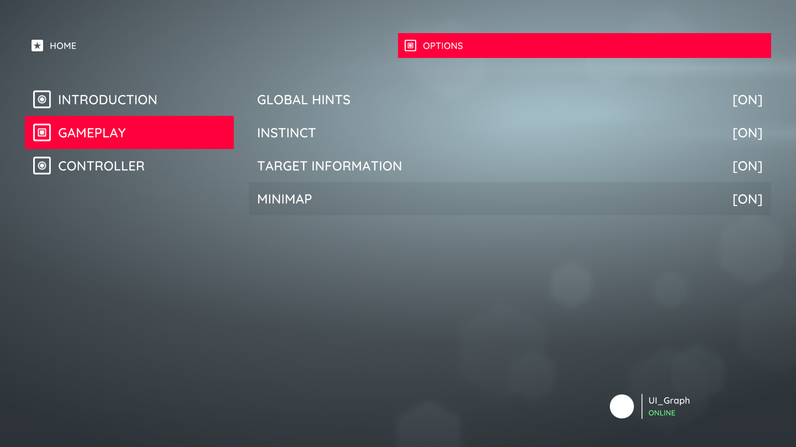

Split Canvas Controller
Introduction
The SplitCanvasController is a container view controller designed for presenting two screens alongside one other. It manages two child view controllers – MainViewController and SecondaryViewController. It offers transitions for replacing the main and secondary view controllers, as well as showing and hiding the SecondaryViewController. The child view controllers fill their respective containers, mainViewControllerContainer and secondaryViewControllerContainer.
Replacing the main or secondary view controllers instantiates and embeds the provided view controller in the appropriate container, mainViewControllerContainer or secondaryViewControllerContainer. Hiding the secondary view controller only hides it, it does not unload it.
The SplitCanvasController uses a SplitCanvasPositioning component to determine the position of its two content view controllers in each state – Secondary Visible and Secondary Hidden. Use the relevant transform objects to configure the placement of the main and secondary view controllers in each state. By default, the split controller uses a bespoke transition animation to animate the SecondaryViewController visibility transition, interpolating between the SplitCanvasPositioning component's two states.
 The Assassin demo uses the Split Canvas Controller to present a list of categories alongside the selected category's options.
The appearance and layout of the SplitCanvasController is highly configurable. For example, the Chirp demo uses the split controller to provide a mobile-like side-bar interface that slides out. In this example, the SplitCanvasPositioning component's hidden secondary view transform is positioned off-screen-left, causing it to slide out when hidden.
A 'mobile-like' Split Canvas Controller from the Chirp demo.
Creation
To create a SplitCanvasController select Create/UI Graph/UI Canvas/Split Canvas Controller from the Unity menu. This will create an asset instance of the SplitCanvasController and a view prefab.
The template that UI Graph will use when creating stack canvas controllers can be changed in the package settings.
Presentation
Present Using A Graph (Recommended)
To present a split controller from a graph, add the split controller to the graph and configure its main and secondary view controllers by connecting the relevant fields to the desired view controllers.
Configuring the split controller's main and secondary view controllers.
Present From Script
To present a split controller directly from script, instantiate a new split controller instance, instantiate its main and secondary view controllers, and use the SetMainViewController and SetSecondaryViewController methods to pass them to the split controller.
public class YourCanvasController : CanvasController
{
// A reference to our split canvas controller asset, configured in the inspector.
public SplitCanvasController splitControllerTemplate;
// References to the main and secondary canvas controllers, configured in the inspector.
public CanvasController mainCanvasControllerTemplate;
public CanvasController secondaryCanvasControllerTemplate;
private void PresentTabBarScreen()
{
// Instantiate the split controller.
SplitCanvasController splitController = Instantiate(splitControllerTemplate);
// Instantiate our main and secondary view controllers. (Remember that this doesn't load their views into memory at this point.)
CanvasController main = Instantiate(mainCanvasControllerTemplate);
CanvasController secondary = Instantiate(secondaryCanvasControllerTemplate);
// Configure the split controller's main and secondary view controllers.
splitController.SetMainViewController(main);
splitController.SetSecondaryViewController(secondary);
// Present the split canvas controller.
Present(splitController);
}
}
Appearance
The split controller's layout can be adjusted in its view.
The SplitCanvasPositioning component is used to determine the position of the main and secondary view controllers in each state – Secondary Visible and Secondary Hidden. Use the relevant transform objects to configure the placement of the main and secondary view controllers in each state. By default, the split controller uses a bespoke transition animation to animate the secondary view controller visibility transition, interpolating between the SplitCanvasPositioning component's two states.